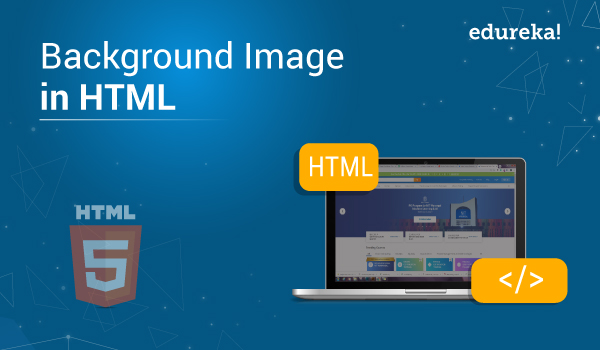
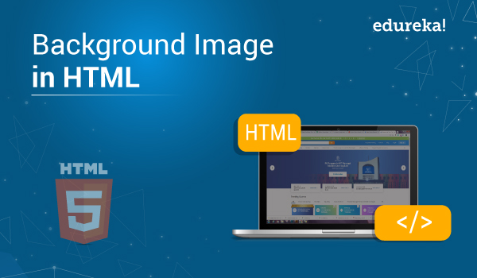
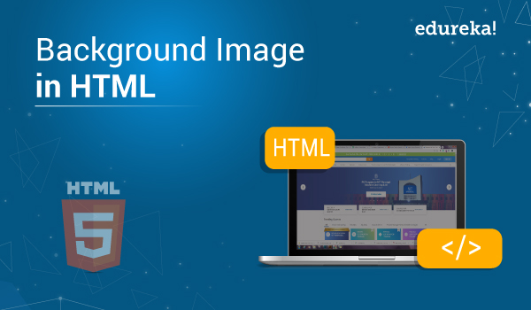

My Web-Page
 
Produced by Harshal Wrake

Produced by Harshal WrakeHtml-User:
Html-Pass:

Produced by Harshal Wrake
मित्रांनो, html ही एक वेब डेव्हलपमेंट प्रोग्रामिंग भाषा आहे. ज्याचे पूर्ण नाव hypertext markup language आहे, कोणत्याही वेबसाइटची रचना html चा वापर करून तयार केली जाते. एचटीएल प्रत्येक वेबसाइटमध्ये वापरली जाते, त्यानंतरच एक वेबसाइट बनत असते. वेबसाईट तयार करण्यासाठी विविध प्रोग्रामिंग भाषांचा वापर केला जातो त्या खालीलप्रमाणे:
Html

Php 
Javascript

Jquery

Bootstrap 
Css
आपण हे कोणत्याही कोचिंग सेंटरवरून (private coaching) किंवा कोणत्याही ब्लॉग वेबसाइटवरून ऑनलाइन (online) शिकू शकता. आणि YouTube वर देखील याबद्दल पुरेपूर माहिती आहे.
Conditions of Use & Sale
Privacy Notice
Interest-Based Ads
© 1996-2024, Amazon.com, Inc. or its affiliates